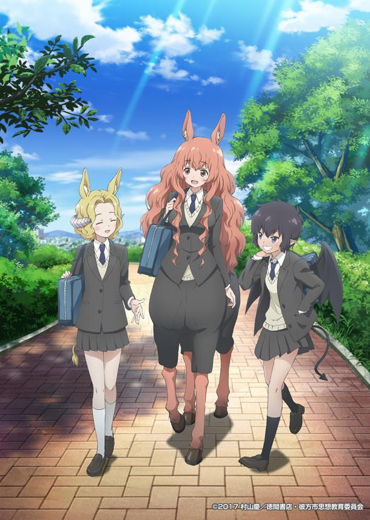

AnimeInterester
半獸人的煩惱

故事簡介
故事主要講述一個基於非現實人類形態的人類世界，一群女高中生們的日常生活故事。作者也通過故事的世界觀描述與角色日常話語間提及的事件，藉此對現實社會的反烏托邦式的諷刺。 君原姬乃是個住在彼方市裡的人馬高中女生，她和好朋友希、羌子，還有許多同學們，一起度過普通的高中生活。女生之間的悄悄話、話劇表演、戀愛話題、對未來的憧憬…… 作品描述在這樣一個奇妙世界裡的學園生活。
製作人員
原作：村山慶
總導演：追崎史敏
導演：紺野直幸
系列構成：待田堂子
角色設計：渋谷秀
總作畫監督：渋谷秀 / 小美戸幸代 / 西尾智恵
プロップ設定：岸これみ
衣裝設定：近岡直 / 伊礼えり
色彩設計：のぼりはるこ
美術設定・美術監督：齋藤幸洋
攝影監督：星野元気
剪輯：神宮司由美
音樂：TakMiyazawa
音樂製作人：塩田幸成
音樂制作：MAGES.
音響監督：森下広人
動畫制作協力：エンカレッジフィルムズ
製作：彼方市思想教育委員会
聲優名單
君原姫乃：深川芹亞
獄樂希：桑原由氣
名樂羌子：白石晴香
御魂真奈美：鎌倉有那
羽蛇神·薩絲薩絲索：綾瀬有
紫乃：桐生朱音
各集標題
| 話數 | 標題 |
|---|---|
| 1 | 你也是妳也是，大家都愛接吻這件事/各位知道馬拉松就是人生的縮影嗎 |
| 2 | 所謂的美麗是雙面刃/活在水裡的叫水人，活在陸地上的就叫山人啊 |
| 3 | 小孩子的活力從哪來的?/不問時代與年代，魔法少女都大受歡迎 |
| 4 | 小孩子的活力從哪來的?/不問時代與年代，魔法少女都大受歡迎 |
| 5 | 南極人的傳聞似乎會不脛而走/不過南極人的歷史及起源終究還是謎 |
| 6 | 溯源祖先或是歷史，究竟是幸?還是不幸?/把喜歡的事當作職業，能得到幸福嗎? |
| 7 | 第一次就是害怕與感興趣共存…雖然是檸檬/小時候看過的恐怖電影，可怕的程度增加了140%吧? |
| 8 | 認真較量最重要的獲勝原因 或許是來自強健的心靈吧/不確定自己相信的事物…偷偷說，這真的很不合理 |
| 9 | 被世人稱做偉人的苦惱是…/被世人稱做偉人的人生是… |
| 10 | 選擇現代藝術鑑賞 作為約會行程的狀況1-2 |
| 11 | 有多少人，花的名字就有多少…這一定是假的/有多少人，美的定義就有多少種，廣義來說絕對是真的? |
| 12 | 以RPG的心情，試著創造出架空故事/激鬥!比腕力大賽，女主角們競爭的結果是? |